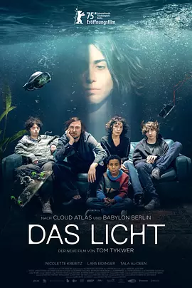

6.6
光
The Light
2025
法国
评分 6.6
导演:
汤姆·提克威
演员:
拉斯·艾丁格 / 尼科莱特·克雷比茨 / 塔拉·阿尔·迪恩 / 艾尔克·比森多佛 / 朱利叶斯·高斯 / 伊利亚斯·埃尔德里奇
类型:
剧情
剧情简介
住在柏林一幢略显老旧的公寓里，恩格尔斯一家：父亲蒂姆是个四十出头却还在假装叛逆的广告撰稿人，母亲米莱娜忙于在非洲筹建儿童剧院，双胞胎女儿弗丽达沉迷夜店与政治抗争，儿子乔恩则整日缩在VR头盔背后。再加上米莱娜从前的情人在肯尼亚留下的小儿子迪奥，这个家庭看似同居，却像陌生人。某天，叙利亚移民法拉以管家的身份走进他们的生活。她安静却神秘，用一台闪光的装置——“光”——透过闭眼刺激、引发深层情绪释放，让家庭成员一个个被迫停下日常、直面隐藏的裂痕。蒂姆在雨中的柏林街头独自行走，米莱娜深夜为募款奔波，弗丽达在舞池里尖叫抗议，乔恩却只愿意在虚拟世界逃避，而且迪奥在客厅唱起《波希米亚狂想曲》仿佛在呼喊。法拉的出现仿佛一场风暴：她没有大声训话，却让每个人的裂缝忽然显现。房屋里的空气开始有电流流动，信任的断裂、相互忽视的岁月、对子女的失望与自责，全都在那光芒闪烁中刺痛。与此同时，法拉自己也隐藏着秘密。影片用两小时多的长度，以炫目的视觉和非线性的叙事带出一场现代家庭的灵魂危机：当爱与冷漠、话语与沉默、行动与逃避同时堆积，剩下的不是和解，而是一个个必须独自穿越的暗夜。导演用一个家庭的变形象征当代都市人群的漂泊与裂隙，让光不是单纯希望的图腾，而是照出伤口的利刃。它不是给出答案，而是一种邀请——直视、爆裂、重生。